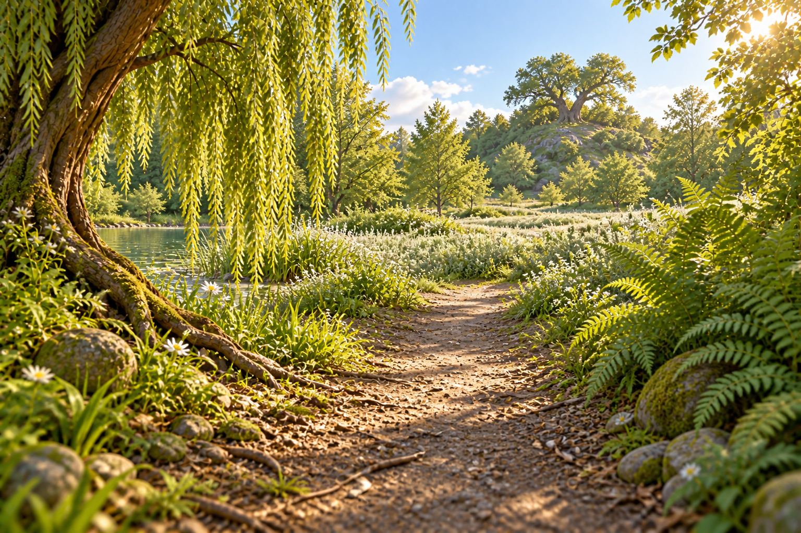
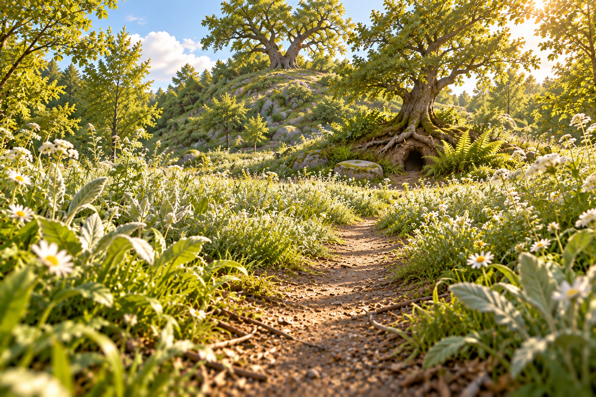
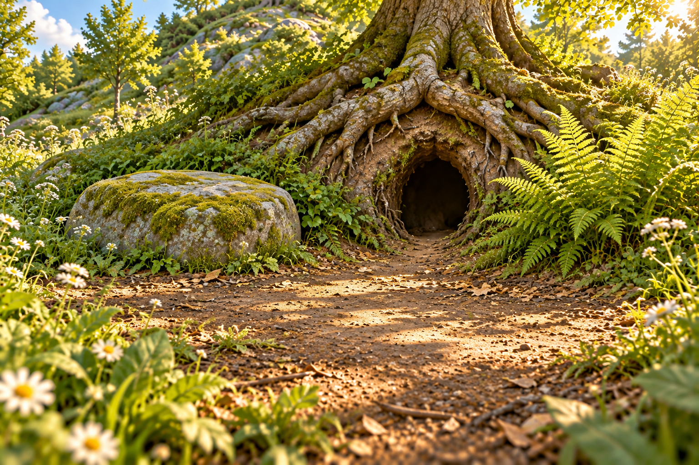
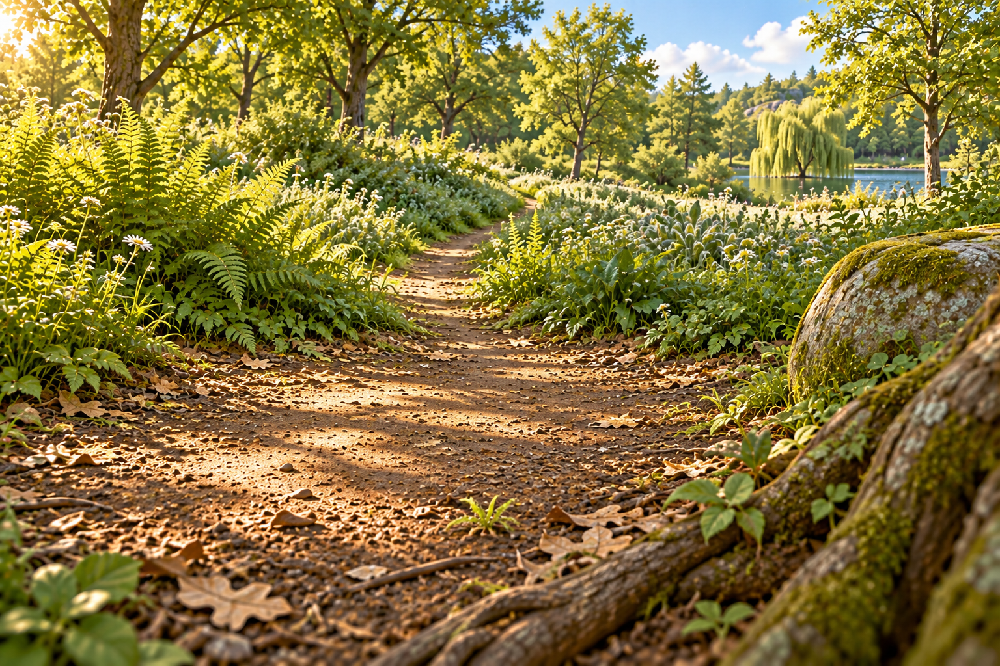
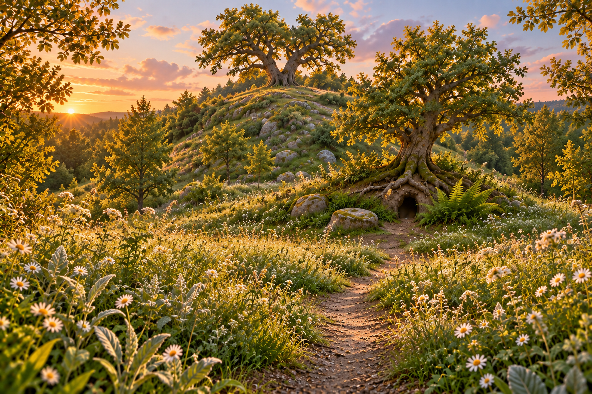

Mr. PinPin / Chapter 02 / Camera notebook
The Wisdom of the Elder
Five landscapes before the characters arrive.
5 of 5 images generated. Review candidates, not an approved chapter.
Generation 1 / Reading position 1
Leaving Crystal Lake
The next day, Mr. PinPin heads beyond Crystal Lake toward the Meadow of Silver Leaves and Burrow Hill.
Camera. Move out of the water onto the departing woodland path, about 30 cm above the ground. Look along the trail, with the restored lake down to the left and the meadow opening ahead.

What I See
The lake stays distinctly below the path on the left; the close willow and roots give a convincing low travelling viewpoint. The forked oak marks the destination beyond the meadow. I see no fauna. The meadow currently reads more as pale flowers than silver leaf undersides, so the next closer view will test that botanical identity. Sun highlights are strong on upper-right foliage, but the path and sky retain detail. Exact distances are not measurable from this image.
Markdown record · Full-resolution image
{kind=link}
Exact Prompt
This reference establishes Crystal Lake and the woodland rendering. It is now the next morning. Move the camera out of the lake and onto the departing path beside the willow, 30 cm above the ground, looking forward along the path with a 28mm-equivalent wide view. The small restored lake lies lower on our LEFT, partly hidden by the close willow trunk and its roots. Ahead, the narrow earth path leaves the shore and opens into a meadow of pale silver-green leaves. Beyond that meadow, slightly RIGHT of centre, rises a modest wooded knoll, Burrow Hill, crowned by one old forked oak. Ferns frame the near right edge; keep the middle of the path open. This is a new physical viewpoint and a new stretch of the journey, not a lake replaced by a road. Morning sun from the right; green and silver vegetation, natural blue sky. Single landscape illustration, 1536x1024, warm dimensional children's-book woodland, readable botanical detail and soft natural daylight with preserved highlights. Landscape only: plants, earth, rocks and water; no animals, birds, insects, people or characters. Clean camera lens. No lettering or panels.
References
- shot-12.png: Established lake, willow and woodland materials; move the camera out of the water and clean the lens.
{kind=link}
Generation 2 / Reading position 2
Across the Silver Leaves
The source places the ancient hill beyond the Meadow of Silver Leaves. This travelling shot makes that distance readable.
Camera. Walk roughly 50 metres forward into the meadow. Lower the camera to 18 cm; look toward the foot of the hill, with nearby leaves revealing their silver undersides.

What I See
The camera is visibly lower and closer to the hill; large pale-backed leaves now establish the silver-leaf identity. A second tree carries the burrow at the foot of the hill, separate from the forked oak above, as intended. The stone is left of the entrance and the fern is right. The trail offers room for later characters and I see no fauna. This is plausible continuity, but the exact crown shape and rocky hillside are not identical to shot 1. The small doorway provides an intended scale cue, not proof of a 45 cm measurement. Meadow whites are noticeably bright; retain this candidate for comparison rather than claim exposure is perfectly locked.
Markdown record · Full-resolution image
{kind=link}
Exact Prompt
Walk the camera about 50 metres FORWARD along the path in the reference, into its silver-green meadow toward the wooded knoll. We are now only 18 cm above the soil, looking forward with a 35mm-equivalent field of view. Nearby pale leaves tilt in a gentle breeze, showing their silver undersides; leave the winding earth trail clearly visible between them. Burrow Hill now fills the upper half rather than sitting on the horizon. Keep its old forked oak. At the FOOT OF THE HILL, well below that crown oak, reveal a small natural oval burrow mouth beneath the exposed roots of a second, smaller bank-side oak, with a flat moss-edged stone just to its left and a fern clump to its right. The opening is about 45 cm high, a hedgehog-scale home without a constructed door. The lake is behind the camera now. Keep the reference's morning light from the right and gentle exposure. Single landscape illustration, 1536x1024, warm dimensional children's-book woodland, readable botanical detail and soft natural daylight with preserved highlights. Landscape only: plants, earth, rocks and water; no animals, birds, insects, people or characters. Clean camera lens. No lettering or panels.
References
- shot-01.png: Location master: same meadow, hill, forked oak and morning light.
Generation 3 / Reading position 3
The Elder's Clearing
Mr. PinPin reaches the elder, who is sitting outside his home. This empty plate reserves the two positions before their conversation.
Camera. Advance to the foot of the hill, about 1.5 metres from the burrow, at 22 cm height. A three-quarter view establishes the entrance, the elder's place and the arriving visitor's path.

What I See
The root entrance, left-hand stone and right-hand fern remain in the intended relationship. The empty foreground gives two clear character positions and the hill remains behind the tree. I see no fauna. This reads as a close approach rather than a substantially different three-quarter angle; the camera turn is subtle. The burrow contour and individual roots have been reinterpreted, not rigidly reconstructed. The fern's lit tips and background flowers are bright, while the bark, soil and moss retain texture.
Markdown record · Full-resolution image
{kind=link}
Exact Prompt
Move forward along the reference's meadow path to the foot of Burrow Hill. Put the camera 1.5 metres from the small burrow mouth, 22 cm above the ground, using a 40mm-equivalent view from slightly to the path's right. Show the SAME oval natural burrow under the smaller bank-side oak roots at the FOOT OF THE HILL (distinct from the forked oak on the hilltop), the flat moss-edged stone immediately LEFT of the entrance, and the fern clump to its RIGHT. The burrow opening is about 45 cm high. Frame a quiet open earth clearing across the lower half: room beside the left stone for the elder, and room lower right where a visitor would stop, but both places are empty. Beyond the roots, let the green hill rise out of frame. Bring bark, soil and tiny leaves into intimate readable detail. Keep the same morning sunlight and soft exposure. Single landscape illustration, 1536x1024, warm dimensional children's-book woodland, readable botanical detail and soft natural daylight with preserved highlights. Landscape only: plants, earth, rocks and water; no animals, birds, insects, people or characters. Clean camera lens. No lettering or panels.
References
- shot-02.png: Home exterior and scale anchor: bank-side oak at the foot of the hill, root arch, stone left, fern right.
Generation 4 / Reading position 4
Listening from the Threshold
They sit outside in the quiet, with only the leaves rustling. The reverse angle lets the reader inhabit the elder's side of the meeting.
Camera. Carry the camera to the empty elder's position beside the stone and turn it back toward the meadow. At 20 cm height, look out along the incoming path; the root arch becomes a near framing edge.

What I See
The reverse direction is legible: the entrance is behind the camera, the stone and close root are now on the right, and the fern frames the left. The lake and willow reappear in the right distance and the illumination comes from the left. There is generous empty foreground for the visitor and I see no fauna. The lake appears quite close; the requested 50-metre approach is not recoverable as an exact distance, and the willow silhouette/shoreline have been reinterpreted. This succeeds as a reverse composition, not a surveyed match of the location.
Markdown record · Full-resolution image
{kind=link}
Exact Prompt
Image 1 is the burrow clearing. Physically move the camera beside its flat stone, close to the burrow threshold, and turn around to look BACK OUT along the route the visitor arrived on. Camera 20 cm high, 28mm-equivalent view. We remain outdoors. A close oak root and a little of the flat mossy stone frame the lower RIGHT edge now that we face the other way; the burrow is behind us. The open earth clearing fills the foreground, then the narrow path recedes through silver-green meadow leaves. Far beyond, a small glimpse of Crystal Lake and its willow sits through a gap toward the RIGHT, consistent with looking back along the route in image 2. Give foreground roots strong parallax; show plenty of empty ground where a small visitor could stand. The same morning sun is now from our LEFT after the turn, with soft shadows and calm greens. Single landscape illustration, 1536x1024, warm dimensional children's-book woodland, readable botanical detail and soft natural daylight with preserved highlights. Landscape only: plants, earth, rocks and water; no animals, birds, insects, people or characters. Clean camera lens. No lettering or panels.
References
- shot-03.png: Immediate clearing geometry and root/stone textures; camera moves to the elder's side.
- shot-01.png: Distant route and lake continuity only, not a composition to copy.
Generation 5 / Reading position 5
A Promise at Sunset
The chapter ends as the sun sets. The elder has promised a lesson on the hilltop tomorrow at dawn; that lesson has not happened yet.
Camera. Return to the meadow edge and lift the camera to 1.2 metres, looking up toward the same hill and forked oak in a broad 35 mm view. Time changes to sunset.

What I See
The time change is clear: the low sun is left of the hill, with rose sky, warm edges and cooler ground shadows. Both trees, the burrow, stone, fern and returning path remain recognizable. I see no fauna and no premature dawn lesson. More hill and sky are visible, although the height change is modest rather than a dramatic raised establishing shot. The meadow is still rich in white flowers, so the silver-leaf identity depends on the large foreground leaves. This is a useful closing candidate, with botanical and exact-geography continuity still open to review.
Markdown record · Full-resolution image
{kind=link}
Exact Prompt
Return to the edge of this SAME silver-leaf meadow and raise the camera to 1.2 metres, looking toward Burrow Hill with a 35mm-equivalent view. Keep the same modest knoll, old forked oak at its crown, small root burrow at the near base and winding meadow path. The slightly higher view now reveals the quiet grassy crest and a little more sky. It is the END OF THE SAME DAY: the sun is setting low off the LEFT, touching the silver-green leaves and oak edges with amber, while the meadow shadows turn cool green. The sky has delicate rose and clear pale blue, not a white blown-out glow. The empty path returns from the burrow toward the foreground. Make the hill feel inviting and ancient, with a place at the crest waiting for tomorrow. This is sunset, not the next dawn. Preserve the reference's botanical detail and scale. Single landscape illustration, 1536x1024, warm dimensional children's-book woodland, readable botanical detail and soft natural daylight with preserved highlights. Landscape only: plants, earth, rocks and water; no animals, birds, insects, people or characters. Clean camera lens. No lettering or panels.
References
- shot-02.png: Hill/meadow master; intentional camera height and time-of-day change.
Source and Process
An autonomous five-shot landscape exploration of Chapter 2, based on the original Russian chapter. No characters or adapted narration have been added. These five views establish the journey, meeting place and evening close; they are not a complete illustrated edition.
Reading the Original
The chapter begins beyond Crystal Lake and the Meadow of Silver Leaves, at ancient Burrow Hill. Master Shipostav lives at its base. Mr. PinPin arrives the day after restoring the lake; they speak outside about listening, responsibility and the origin of his magic.
I inspected both original illustrations. They are close portraits of the bespectacled, hatted elder with an open book and acorns, rendered with a grainy storybook texture. They establish the elder's scholarly mood, but neither supplies a usable wide map of the hill or lake route. I have not treated their anatomy as a model for new characters.
The forked oak, silver-leaf planting, natural root entrance, mossy stone and exact route are proposed staging, not literal details established by the text. The source does describe a bramble staff, but this first landscape pass leaves character props for later.
The closing paragraph is sunset. The meeting on the hilltop at dawn is tomorrow's promise, not an event to stage as happening in this chapter.
Original illustration 1 · Original illustration 2 · Original chapter text
{kind=link}
{kind=link}
The Method, in Order
- Read all 14 text blocks and inspect the two original images; distinguish source events from proposed set design.
- Review Chapter 1's location-camera prompt, direct-character log and anatomy correction record; write the reusable workflow before generating.
- Prewrite five camera briefs and exact prompts. Begin with the lake as a rendering/location reference, then branch into short reference chains.
- Generate each landscape once, timestamp the tool call, and immediately register the PNG with matching Markdown and JSON. No colored-limb blocking and no actors in this pass.
- Inspect each result before referencing it; append a candid review. The report rebuilds after every save and review.
- Check the final report on mobile and desktop, verify asset and sidecar links, then publish the camera study separately from the finished Chapter 1 reader.
A Brief Adjustment
After shot 1: distinguish the crown oak from a second tree at the foot of the hill, so the elder's entrance stays at the hill's base as the source requires. This was a camera-brief adjustment before generating shots 2 and 3, not an image retry.
The Five-Shot Plan
- Leaving Crystal Lake Move out of the water onto the departing woodland path, about 30 cm above the ground. Look along the trail, with the restored lake down to the left and the meadow opening ahead.
- Across the Silver Leaves Walk roughly 50 metres forward into the meadow. Lower the camera to 18 cm; look toward the foot of the hill, with nearby leaves revealing their silver undersides.
- The Elder's Clearing Advance to the foot of the hill, about 1.5 metres from the burrow, at 22 cm height. A three-quarter view establishes the entrance, the elder's place and the arriving visitor's path.
- Listening from the Threshold Carry the camera to the empty elder's position beside the stone and turn it back toward the meadow. At 20 cm height, look out along the incoming path; the root arch becomes a near framing edge.
- A Promise at Sunset Return to the meadow edge and lift the camera to 1.2 metres, looking up toward the same hill and forked oak in a broad 35 mm view. Time changes to sunset.
Measured, Not Estimated
151.0 seconds summed image-call wall time across 5 registered calls. This includes tool waiting, not just model computation. It excludes preparation, review, publishing and any undocumented earlier work. No monetary cost is exposed by these calls.
Records above follow actual generation time. Reading positions are recorded separately. Each image is a single attempt in this study; future revisions get a new filename and record.
What Carries Forward from Chapter 1
Miguel's successful camera directions specified physical travel and relationships: the lake below the path, two retreats of 50 metres, underwater views looking up, and a wet return to the surface. This pass reuses that spatial approach, with deliberate foreground parallax and a reverse view.
The colored-leg blocking experiment did not reliably preserve facial quality or body posture. It is not part of this pass. Future character renders should begin from the clean landscape, place the whole cast together, and receive a separate visual check of faces, scale, gaze and each fore/hind limb attachment.
Repeated edits appeared to brighten highlights; the cause remains unverified. Short reference chains reduce repeated processing but do not guarantee identical exposure. The later rabbit corrections also show that a convincing image can still contain anatomy errors. Prompt compliance must be inspected, not assumed.